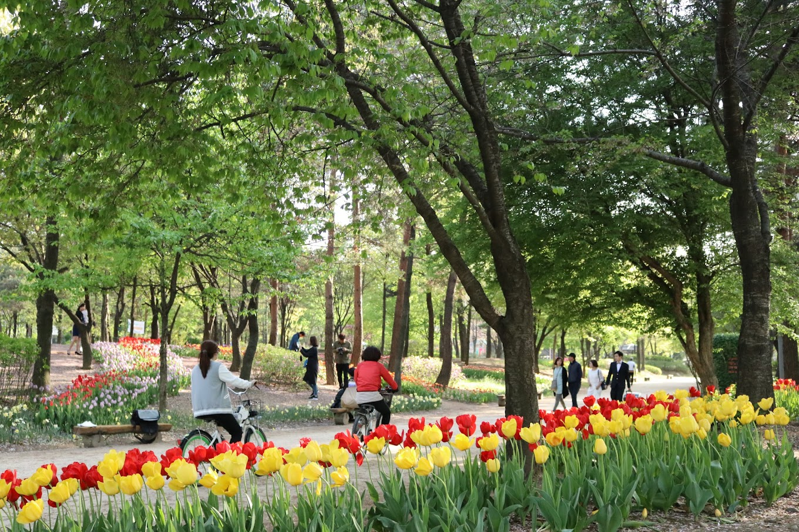
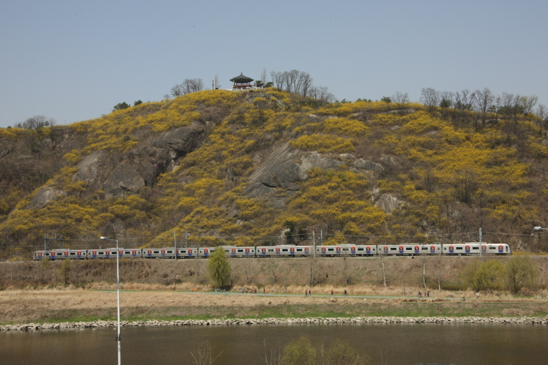
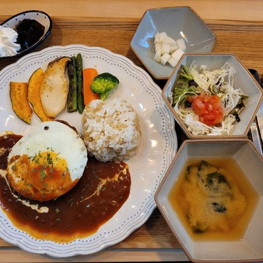
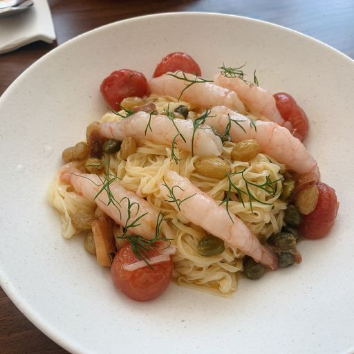
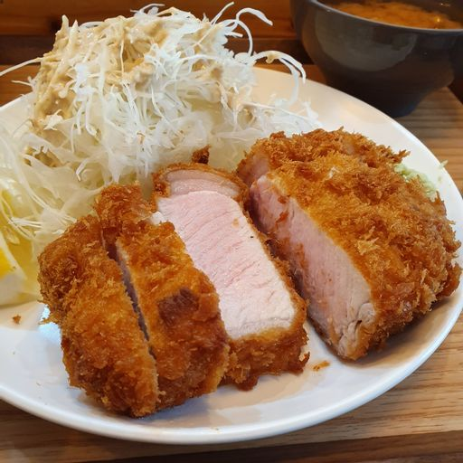
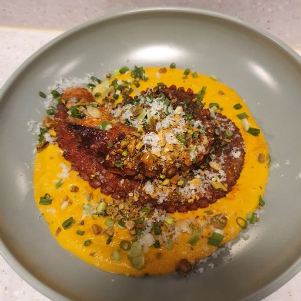
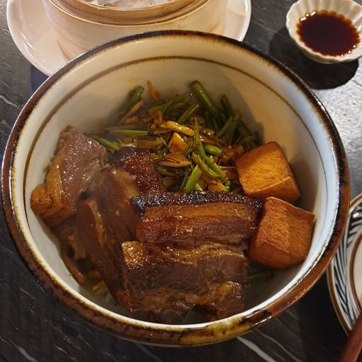
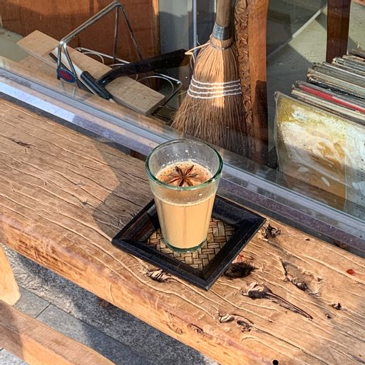
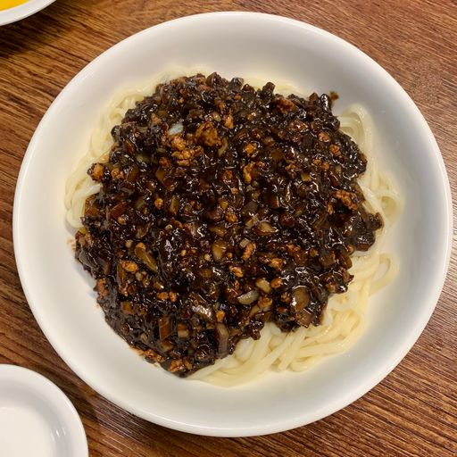

서울숲서울특별시 성동구 성수동 1가 685번지 일대에 있는 공원. 18만 평 규모의 5개 테마공원으로서, 동북부 주민은 물론, 1,100만 서울시민에게 환경친화적인 대규모 휴식 공간이다. 평점 4.6/5 |
 |
응봉산서울특별시 성동구 응봉동 한강 변에 있는 높이 해발 81m의 산. 응봉산에서 바라보는 일출은 한강과 서울숲, 잠실운동장 등 서울 동부권의 모습을 한눈에 볼 수 있다. 한강조망명소로 사진 작가 및 많은 이들이 찾고 있다. 평점 4.5/5 |
 |
미오도쿄다이닝서울특별시 성동구 연무장5가길 7 현대테라스타워 117호 추천메뉴 : 도쿄수제함바그고젠 평점 4.8/5 |
 |
디핀옥수서울특별시 성동구 독서당로 194 B1 추천메뉴 : 참치타르트 평점 4.8/5 |
 |
돈까스전원서울특별시 성동구 왕십리로24길 13 추천메뉴 : 등심/안심 돈까스정식 평점 4.8/5 |
 |
쿠나서울특별시 성동구 연무장5길 9-16 105호 추천메뉴 : 푸타네스카 평점 4.7/5 |
 |
마리오네서울특별시 성동구 성수이로12길 15 1F 추천메뉴 : 나폴리 평점 4.7/5 |
지우관서울특별시 성동구 뚝섬로9길 16 추천메뉴 : 우육면 평점 4.7/5 |
 |
높은산서울특별시 성동구 성수이로 18-1 추천메뉴 : 진저짜이 평점 4.7/5 |
 |
기연각서울특별시 성동구 용답중앙길 76 추천메뉴 : 볶음탕수육 평점 4.6/5 |
 |